It starts strong, then trails off. Half the feature, a function stubbed with a comment that says “the rest goes here,” a confident “you can now…” for something it never actually wrote.
Getting AI to finish is its own skill. These ten prompts force completion — no stubs, no placeholders, no quietly dropped requirement — and catch the half-done work before it reaches your users.
The Ten
Every Prompt, Copy-Paste Ready
01 / 10Finish
No Placeholders
"No TODOs, no '// rest of
code here'. Write every
single line."
A placeholder is a bug the model has politely scheduled for you.
02 / 10Audit
Tell Me What's Missing
"List every function you
left unimplemented or
mocked."
It knows what it skipped. It just won’t mention it unless asked.
03 / 10Chunk
One File at a Time
"Do file 1 of 4
completely. Then stop.
I'll say next."
Smaller asks finish. Big asks trail off into a summary.
04 / 10Resume
Pick Up Exactly Here
"Here's where you stopped.
Continue from that line —
don't start over."
Left alone it will restart and quietly rewrite what already worked.
05 / 10Verify
Does It Actually Run
"Walk through this line by
line as if executing it.
Where does it crash?"
Reading its own output back catches the half it never wrote.
06 / 10Trim
Cut the Explaining
"Skip the intro and the
summary. Code only."
Every paragraph of preamble is output it doesn’t spend on the build.
07 / 10Split
Make It Smaller
"This is too big for one
pass. Break it into 3
parts and name them."
Letting it plan the split beats watching it run out mid-file.
08 / 10Real
Real, Not Mocked
"Replace every fake value
and sample array with the
real implementation."
Demo data is how a broken build looks finished.
09 / 10Wire
Show Me the Joins
"Show the imports and
where each piece actually
gets called from."
Ten perfect files that never call each other still do nothing.
10 / 10Sweep
Anything Left
"Anything unfinished,
unwired or untested? Yes
or no — then list it."
Forcing a yes/no first stops it burying the answer in prose.
The Slides
All Twelve, Full Size
The full set at full size. Save the ones you’ll actually use — or screenshot the lot.
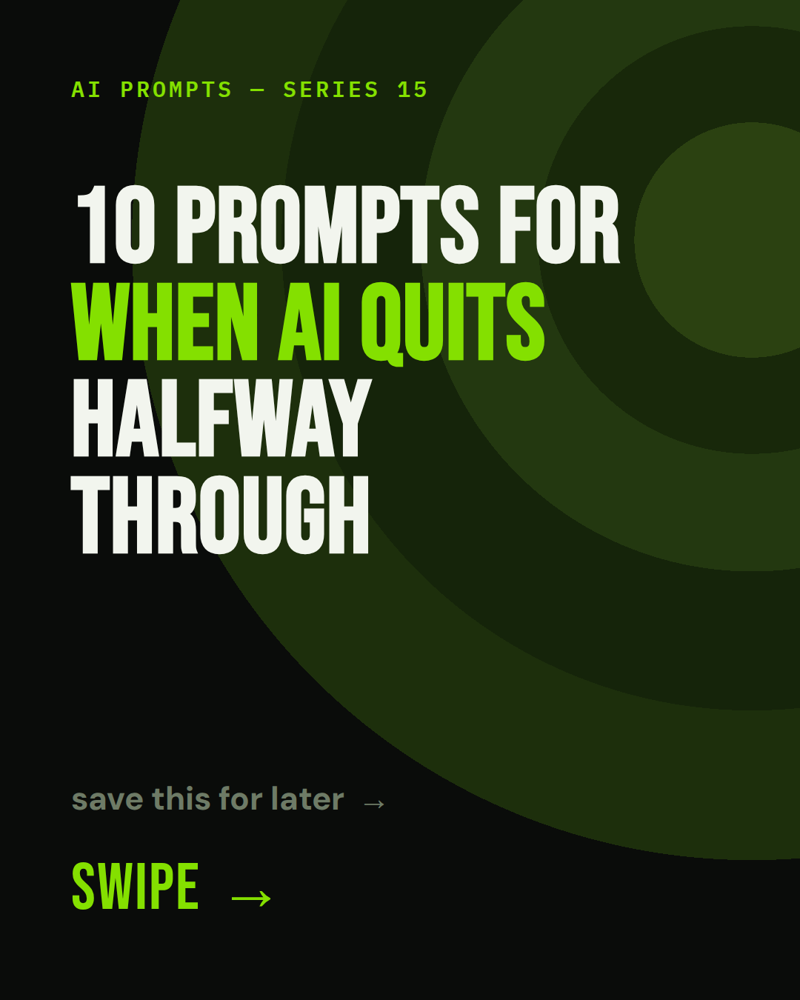
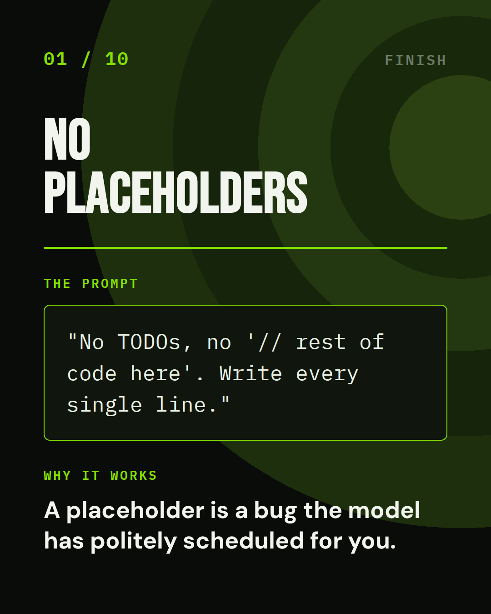
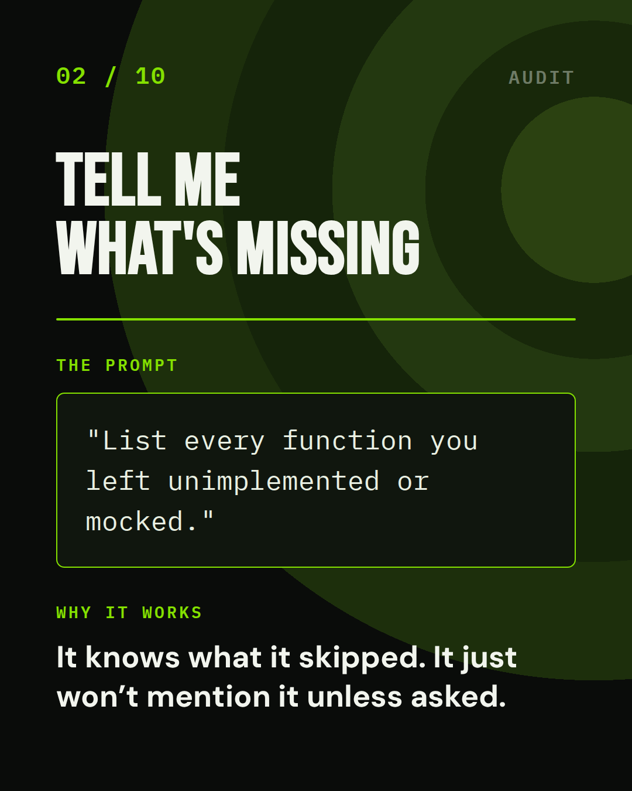
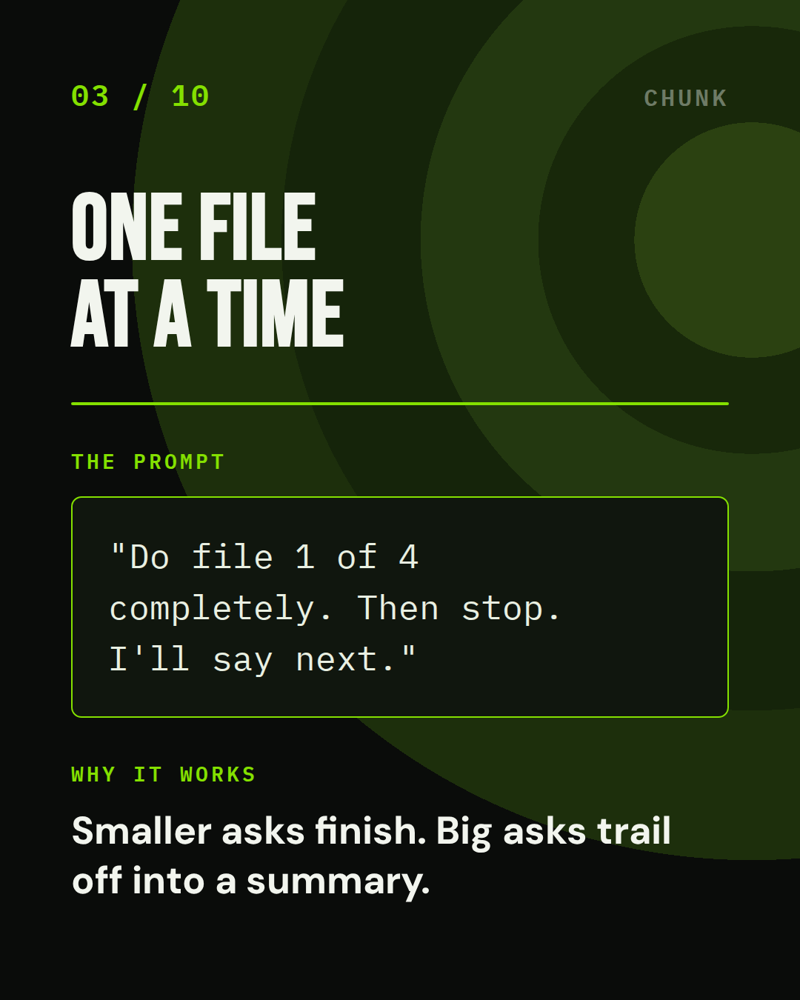
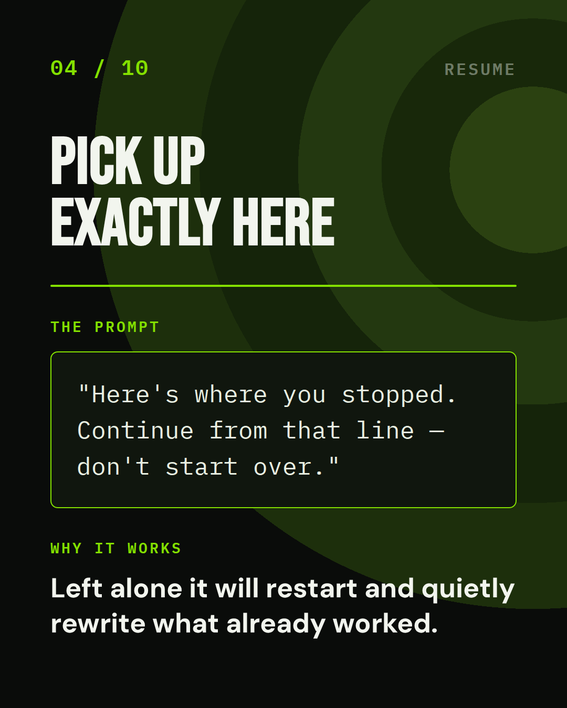
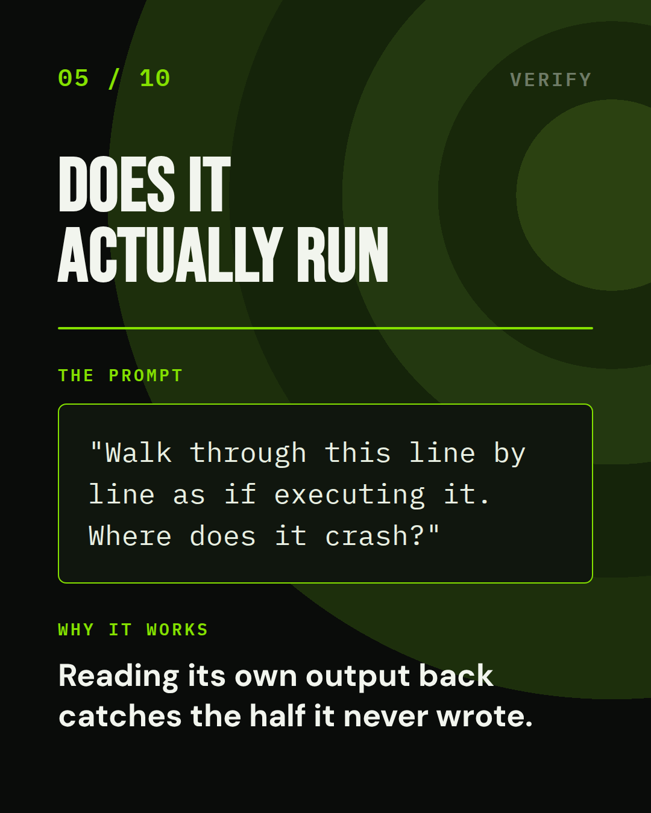
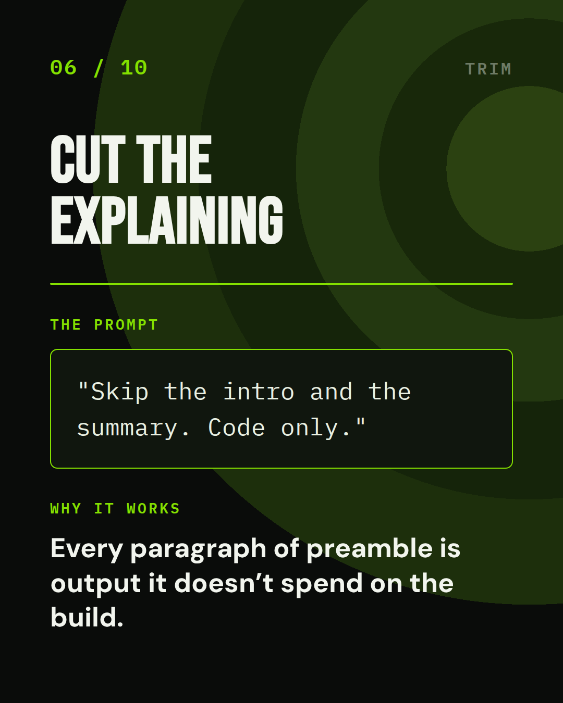
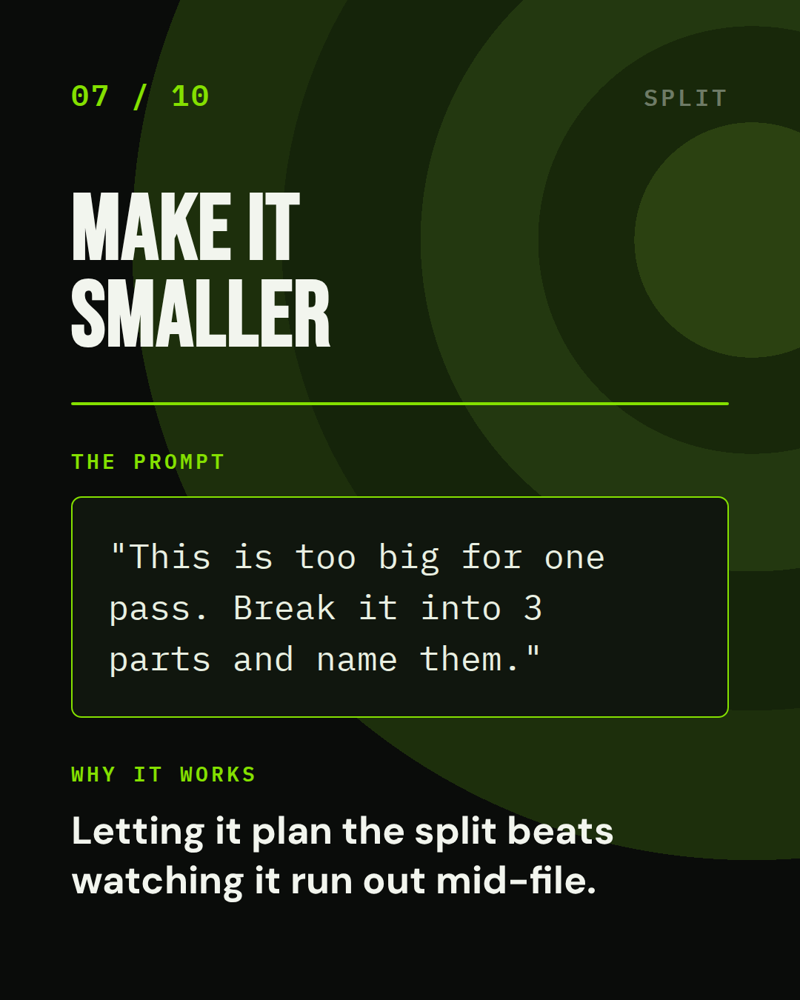
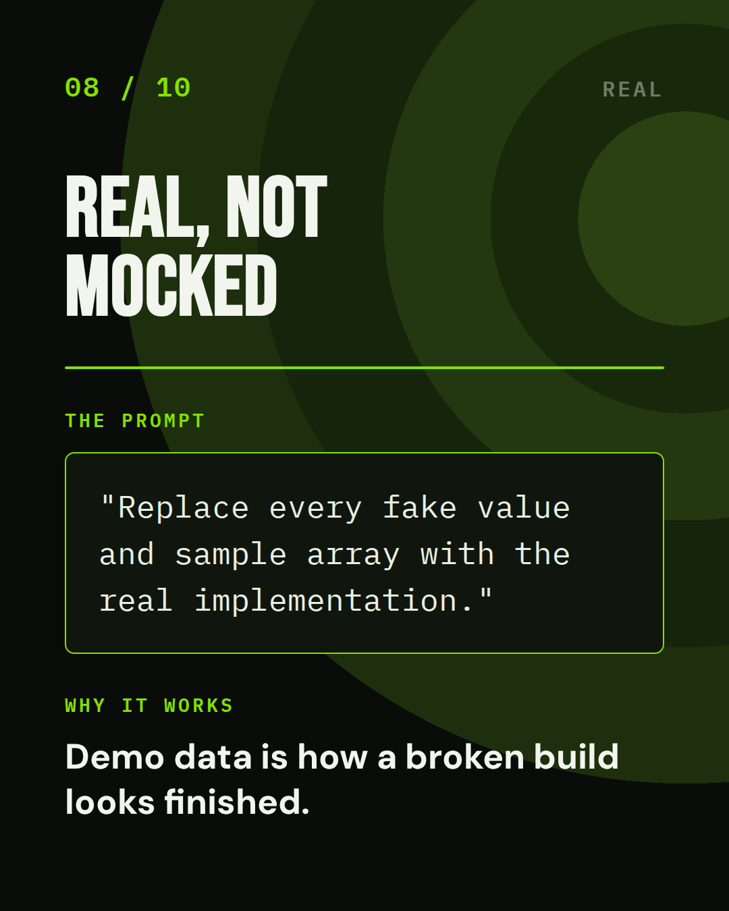
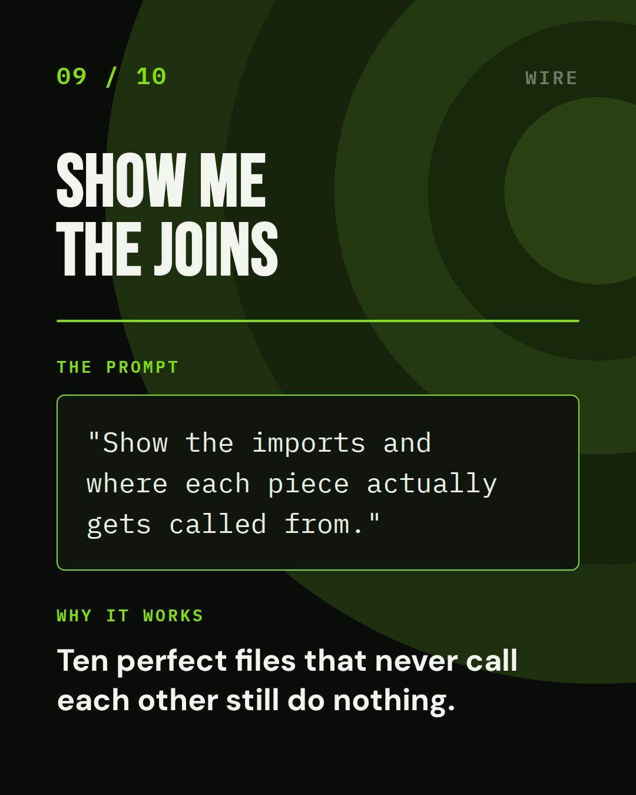
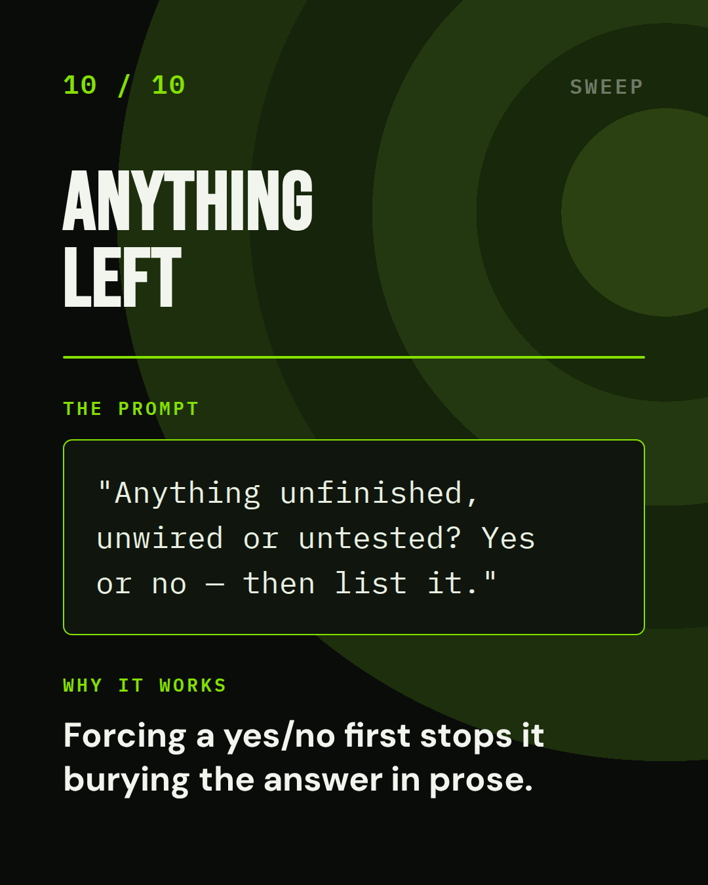
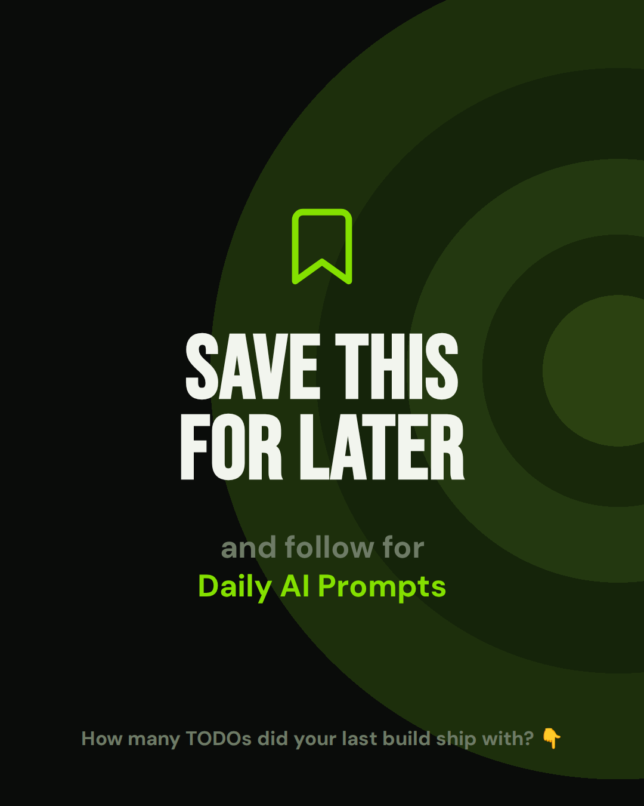
Twelve slides · 1080×1350